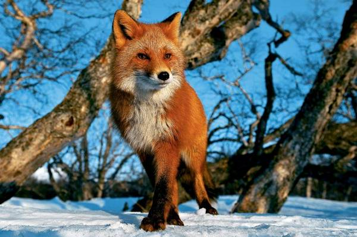
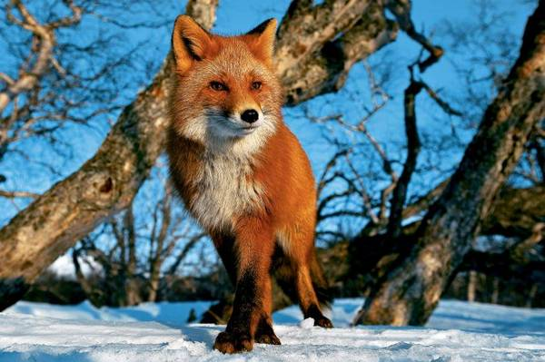
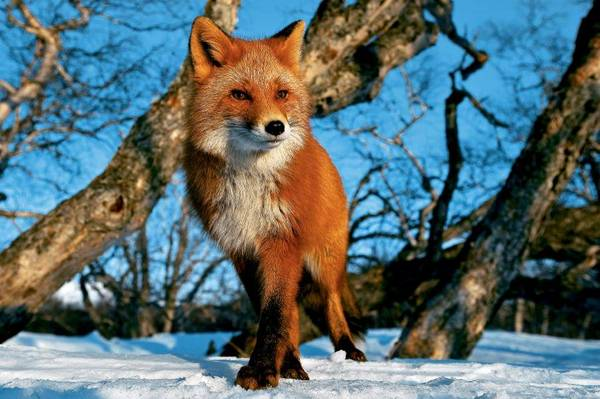

Посилання
wiki
wiki в новій вкладці
wiki з використанням title
Перейти на попередній урок
Перейти на інший урок
Перейти на сторінку About
typography
Перейти в кінець сторінки
кінець сторінки
Малюнки

Малюнок як посилання
 
